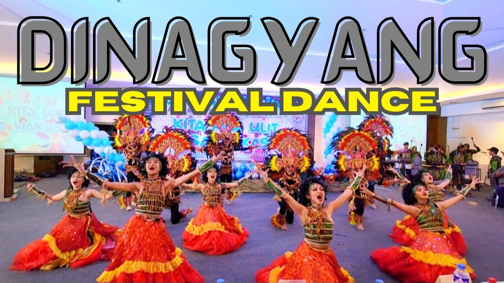
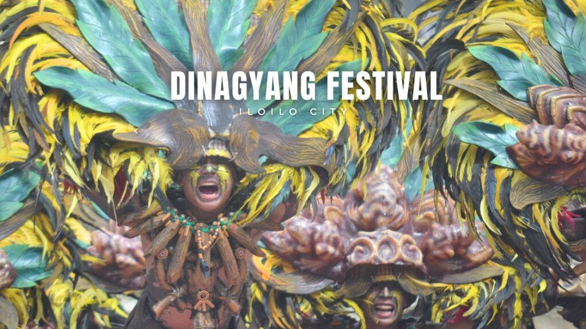
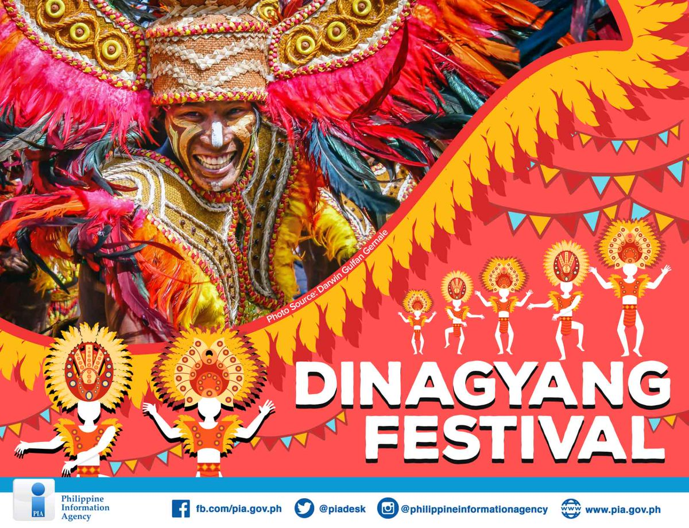

The Dinagyang Festivalis a world-class, multi-awarded cultural and religious celebration in Iloilo City, Philippines, held annually on t fourth Sunday of January to honor the Santo Niño. Known as the "Queen of all festivals," it features vibrant street dancing (Ati-atihan), elaborate costumes, and drumming, drawing millions of tourists.
Iloilo’s Dinagyang never fails to showcase its rich cultural heritage with exotic festivities such as revelry parades and tribal street dances. A visually captivating festival, the Dinagyang certainly shines with world-class quality and raw authenticity as its people continue to dance along the chants of “Hala Bira!” and “Viva Señor Santo Nino!” year after year.
@2026 Dinagyang Festival Website!
Press Here For More -